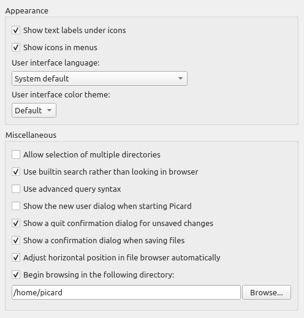

User Interface Options
{kind=link}
Show text labels under icon
If this option is disabled, the text labels under the icons in the toolbar will not be displayed, causing the toolbar to appear a little smaller.
Show icons in menus
Some users prefer to disable menu icons, which is the default behavior for macOS systems. This option allows the user to select whether the icons are displayed in the menus.
User interface language
By default, Picard will display in the language displayed by your operating system, however you can override this and select a different language if needed.
User interface color theme
This option allows the user to select the color theme used by Picard. On macOS and Windows systems, the available choices are:
Default - The default color scheme based on the operating system display settings.
Light - A light display theme.
Dark - A dark display theme.
On Linux and similar operating systems, the available choices are:
Default - The default color scheme based on the operating system display settings.
System - The Qt5 theme configured in the desktop environment.
Note
The colors for the light and dark themes can be customized in the Colors section. Separate sets of color selections are maintained for the light and dark themes. The colors for the currently displayed theme are the ones displayed for editing.
Allow selection of multiple directories
Enabling this option will bypass the native directory selector and use Qt’s file dialog. This may be desirable since the native directory selector generally doesn’t allow you to select more than one directory. This applies to the dialog. The file browser always allows multiple directory selection.
Use built-in search rather than looking in browser
When this option is enabled the search for albums, artists or tracks will show the results in a dialog. By default this option is enabled. If this option is disabled Picard will open a search on MusicBrainz.org in your default web browser.
Use advanced query syntax
This will enable advanced query syntax parsing on your searches. This only applies to the search box at the top right of Picard, not the lookup buttons.
Show the new user dialog when starting Picard
When this is enabled, Picard will show a dialog intended for new users when you start the program. This displays a warning about the consequences of saving files, along with a suggestion for minimizing the impact until you have confirmed that your configuration produces the expected results. It also provides a link to the on-line documentation.
Show a quit confirmation dialog for unsaved changes
When this is enabled, Picard will show a dialog when you try to quit the program with unsaved files loaded. This may help prevent accidentally losing tag changes you’ve made, but not yet saved.
Show a confirmation dialog when saving files
When this is enabled, Picard will show a dialog when you save files, indicating what actions will be performed on the files and the number of files to be saved. This may help prevent accidentally making changes that you are not expecting.
Adjust horizontal position in file browser automatically
When this is enabled, Picard will automatically scroll the file browser display to keep relevant content visible.
Begin browsing in the following directory
By default, Picard remembers the last directory used to load files. If you enable this option and provide a directory, Picard will always start in the directory provided.